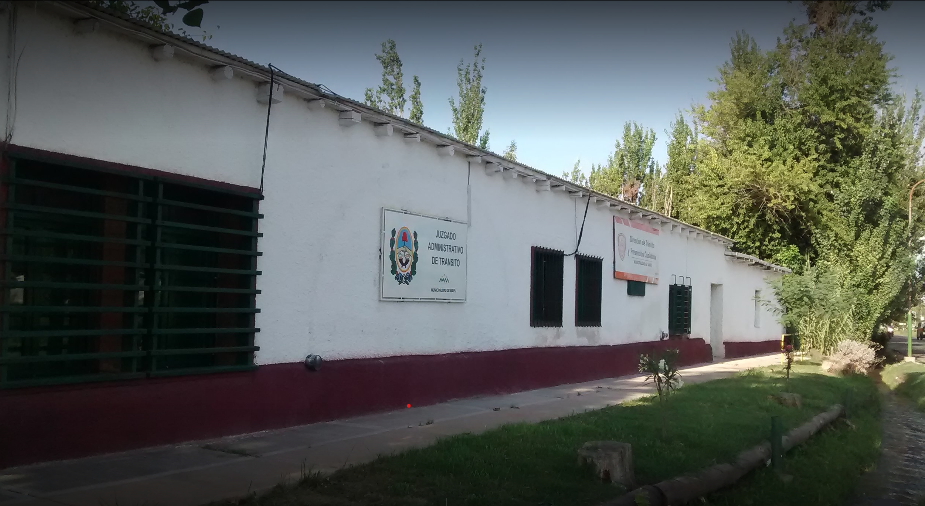

¿QUÍENES SOMOS?
El Juzgado Administrativo Vial es una entidad Municipal que ofrece servicios de resoluciones de Actas y Accidentes, dando por finalizado el procedimineto jurídico de las mismas a cargo de la Dra. Jueza Carolina Benvenutti junto a su equipo de colaboradores. Contamos con mas de 10 años de experiencia en el area de Resoluciones, notificaciones y asesoramiento personalizado.
MISIÓN
Ordenar la conducta ciudadana y fomentar un orden social justo, aportando a la construcción del bienestar público.
VISIÓN
Ser los Juzgados lideres de la Provincia de Mendoza.
Juzgado Administrativo de Maipú
- Jueza Dra. Maria Laura Nento
- Secretaria Dra. Ibel Bianchinelli
- Secretartio Dr. Andres Rafael Fama
- Calle Emilio Civit 1884, Maipú
- tel (261-4972448)
- Lunes a Viernes de 7:00hs a 13:00hs
- jvialmaipu@gmail.com
Juzgado Administrativo zona Este
- Jueza Dra. Carolina Cecilia Benvenutti
- Secretartio Dr. Hugo Alonso
- Ruta 50 N° 4359, Rodeo del medio, Maipú
- tel (261-4975332)
- Lunes a Viernes de 7:00hs a 13:00hs
- jvialmaipueste@gmail.com
